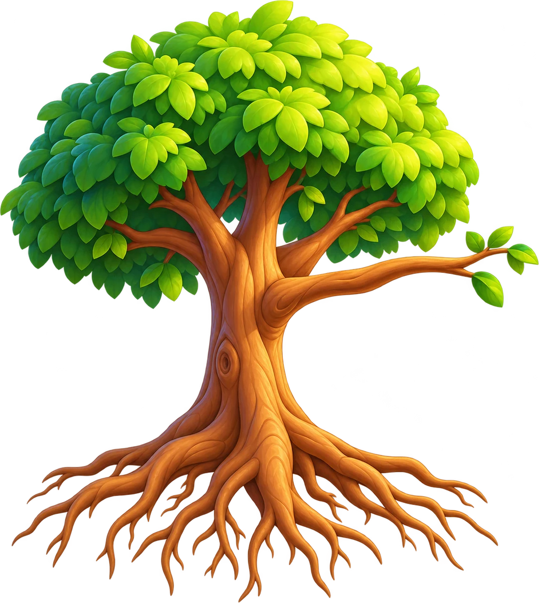
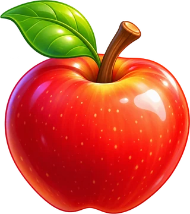
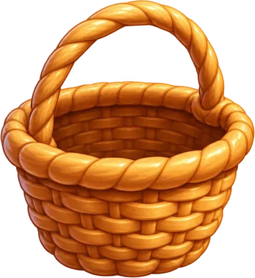
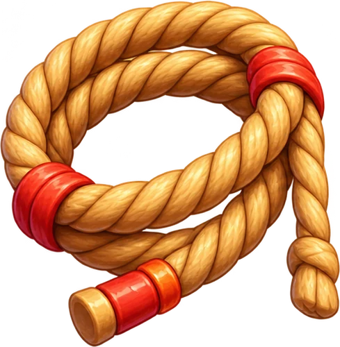
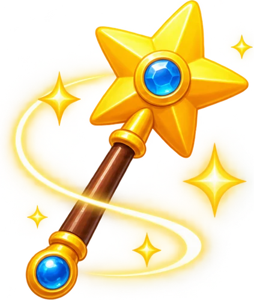

У цьому світі все навпаки — обери правильний інструмент.



над яблуком
під яблуком
Відкриття 1
Дерево перевернуте → ?
Відкриття 2
Яблуко падає вгору → ?
Кошик

Мотузка

Чарівна паличка
Навиворіт
🗺️ На карту
Дивне дерево
На площі росте дивне дерево: його
коріння — у небі
, а
крона — в землі
. На гілці висить яблуко, але дістати його неможливо.
Як спіймати
яблуко? 🔎
🏆
Загадку розгадано!
Вирушай за новими досягненнями!
➜
Як спіймати яблуко?
Поруч лежать:
кошик
мотузка
чарівна паличка
«Навиворіт»
Звичайно
Яблуко падає вниз — лови знизу.
🔄 Навиворіт
Яблуко падає вгору — кошик зверху!
Зрозуміло 👍
Яблуко спіймано!
⭐⭐⭐
Чудова робота!
Два відкриття:
Дерево перевернуте →
переверни світ
🔄
Яблуко падає вгору →
зміни спосіб дії
: підстав кошик не знизу, а зверху
У світі навиворіт треба думати навиворіт! 😄
Вирушай далі! ›
🗺️ На карту
☰ У меню